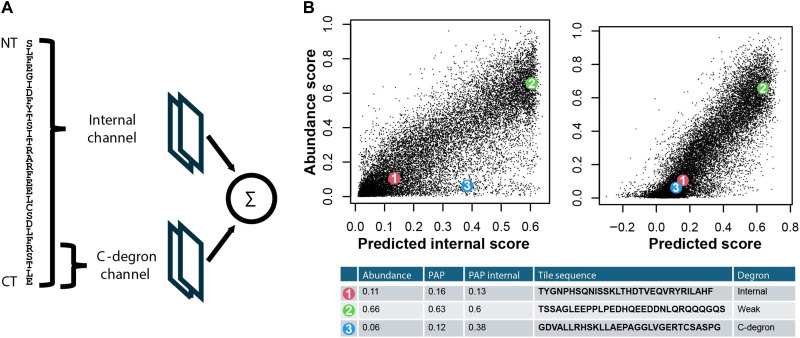
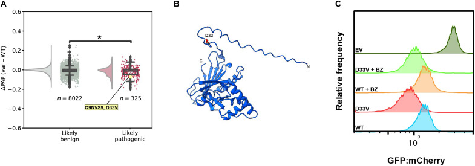

Bài cung cấp nhãn yếu mức đoạn và mô hình PAP làm đối chứng. Audit kênh nội của PAP cho thấy điểm mức đoạn tốt chưa đủ để xác định motif theo vị trí.
212.658 đoạn peptide có điểm, trên 5.672 protein bào tương. Đây là nguồn nhãn yếu mức đoạn cho nhiệm vụ phụ và baseline PAP; nhãn đột biến theo residue từ Zhang 2023 mới là nguồn huấn luyện chính. Dữ liệu đã tải, đã kiểm SHA-256, đã tự đếm lại. TỰ ĐO
PAP là mô hình tốt nhất hiện có trên bài toán này. Đề tài không cạnh tranh với nó trên thang điểm khối, mà dùng nó làm baseline phải chạy lại được.
Trên kênh nội cnn2w1 của mô hình này, phép thử đảo thứ tự residue cho Pearson(gốc, đảo) = 1,000000. Kênh đầu C của PAP có thông tin vị trí và không thuộc kết luận này. TỰ ĐO
Trước bài này, degron được biết tới theo kiểu từng ca một: mỗi degron là một nghiên cứu riêng, và các motif đồng thuận gom vào cơ sở dữ liệu như ELM. Kết quả là chỉ biết degron cho một phần rất nhỏ trong hơn 600 E3 của người.
Câu hỏi của nhóm tác giả: nếu đo gần như mọi đoạn của proteome bào tương thì bản đồ degron trông thế nào? Và câu hỏi ứng dụng đi kèm: một đột biến sai nghĩa có thể tạo ra degron mới và gây bệnh theo cách đó không?
Mỗi đoạn 30 residue, chồng nhau 15 NGUỒN
Yêu cầu ít nhất hai lần đo lặp NGUỒN đã đếm lại
Trên 5.672 protein NGUỒN
Cộng 30% trung gian và 51% không phải degron NGUỒN
Thiết kế thí nghiệm đã mô tả ở bài nền 2: thư viện GFP–đoạn peptide với mCherry làm đối chứng nội bộ, phân loại bằng FACS thành bốn ống, rồi giải trình tự. Các đối chứng bằng cycloheximide, bortezomib và MLN7243 xác nhận việc mất GFP phụ thuộc E1 và proteasome, tức đúng là hệ ubiquitin–proteasome. NGUỒN
Phân bố điểm degron thô có bốn đỉnh, là hệ quả của việc chỉ có bốn ống FACS. Tác giả biến đổi thang để phân bố khớp với phân bố huỳnh quang đo trực tiếp, được abundance score — và thang này ngược chiều điểm degron (Spearman = −1). Mô hình được huấn luyện để dự đoán abundance score, không phải điểm degron. NGUỒN Nhầm chiều ở đây là nhầm dấu toàn bộ kết quả.
Đây là chỗ bản ghi chú trước đây của đề tài đã sai, và việc đọc toàn văn đã sửa lại được.
Dùng MMseqs2 với ngưỡng e < 0,001, phủ 60%, cluster-mode 1, độ nhạy đầy đủ. Rồi chọn ngẫu nhiên 527 protein trong số những protein không gom cụm với protein nào khác. NGUỒN
Vì hai protein không giống nhau vẫn có thể chứa đoạn giống nhau, họ gióng mọi đoạn của tập kiểm tra với mọi đoạn của tập huấn luyện (e < 0,001, phủ 90%), và trả cả protein về tập huấn luyện nếu có bất kỳ đoạn nào giống. NGUỒN
Còn lại khoảng 7% số đoạn làm tập kiểm tra — cụ thể 15.815 đoạn trong 211.444 đoạn có trình tự acid amin duy nhất. NGUỒN
Audit của đề tài đã đếm được: danh sách 527 gene thực tế gồm 428 gene dùng được + 96 gene nằm trọn trong tập huấn luyện + 3 gene giữ một phần, và holdout hiệu dụng là 428 gene / 15.820 đoạn. TỰ ĐO Khi đó nguyên nhân được ghi là “chưa do tác giả nêu”, và giả thuyết đưa ra là tác giả tiền tuyển rồi trả gene lớn về tập huấn luyện.
Giả thuyết đó sai, và phần Methods có nêu nguyên nhân. 96 + 3 ≈ 99 protein bị trả về tập huấn luyện đúng bằng con số tác giả ghi, và lý do là bộ lọc giống nhau ở mức từng đoạn, không phải lọc theo cỡ gene. Con số đoạn cũng khớp: tác giả ghi 15.815, audit đếm 15.820. NGUỒN — đọc toàn văn 11/10/2026
Hệ quả cho cách nói của đề tài: việc kiểm soát đồng dạng của nhóm tác giả kỹ hơn mức đề tài từng ghi nhận — họ lọc ở cả hai mức, protein và đoạn. Nên không được dùng “sửa giao thức đánh giá” làm đóng góp. Cách nói đúng vẫn là “tốt nhưng không hoàn hảo”: phép gióng độc lập vẫn tìm ra 14/428 gene (3,3%) có họ hàng trong tập huấn luyện ở identity ≥ 30%, và một gene trùng 100% trên 77 residue với TRIM5. TỰ ĐO
PAP — peptide abundance predictor — là một mạng tích chập hai kênh, và hai kênh được cộng thẳng với nhau ở cuối, không có tương tác nào giữa chúng. đã đọc mã

| Kênh | Đọc gì | Kiến trúc | Biết vị trí không |
|---|---|---|---|
| Kênh nội | 25 residue đầu của đoạn | Conv1D(25 filter, cửa sổ 1) → GlobalAveragePooling1D → ba lớp dày |
Không. Bất biến hoán vị hoàn toàn TỰ ĐO |
| Kênh đầu C | 5 residue cuối | one-hot 100 chiều → ba lớp dày | Có, nhưng chỉ trong 5 vị trí cuối |
| Hợp nhất | — | Add() — cộng thuần túy |
Không có tương tác giữa hai kênh |
train_cnn2w.py và PAP.py trong repo của tác giả, không phải từ bài báo — bài báo mô tả kiến trúc ở mức khái quát. TỰ ĐOBài báo viết rằng mạng tích chập “có thể bắt được các hiệu ứng phi tuyến và các motif gồm bất kỳ số acid amin nào nếu chúng nằm trong cửa sổ vị trí được xét”. NGUỒN Đây là một phát biểu có điều kiện, và nó đúng.
Nhưng cấu hình mặc định đã công bố dùng cửa sổ bằng 1, nên điều kiện đó không thỏa. Chính tác giả mô tả kênh nội là để “mô hình hóa hiệu ứng thành phần”. Vậy không có mâu thuẫn giữa bài báo và phép đo của đề tài — chỉ là một chỗ rất dễ đọc lướt rồi hiểu nhầm rằng mô hình đã bắt motif. SUY LUẬN
W, F, Y, I, C, L, V đứng đầu bảng điểm degron; D, P, E, S, G đứng cuối. Hiệu ứng phụ thuộc vị trí gần như chỉ tồn tại ở vài residue sát đầu C. NGUỒN Xem Hình 2 trong bài nền 4.
Điểm degron cao đi với rASA thấp và pLDDT cao — tức là degron kiểm soát chất lượng, chỉ hoạt động khi protein bung ra. NGUỒN Xem Hình 3 trong bài nền 3.
0,82 nếu chỉ dùng kênh nội. Trên 164 phép đo thông lượng thấp làm riêng để kiểm chứng, PAP đạt 0,85. NGUỒN
ΔPAP là hiệu điểm giữa trình tự đột biến và trình tự gốc. Biến thể gây bệnh ở vùng phơi lộ có ΔPAP thấp hơn biến thể lành tính, Kruskal–Wallis P = 5,4 × 10⁻⁶. NGUỒN
Biến thể gây thiếu hụt PNPO, biểu hiện thành động kinh sơ sinh. Vùng chứa D33 phơi lộ mạnh, và nghiên cứu trước cho thấy biến thể này vẫn còn hoạt tính enzyme và vẫn bền về cấu trúc. ΔPAP dự đoán nó tạo degron mới; thực nghiệm xác nhận protein bị mất theo cơ chế phụ thuộc proteasome. NGUỒN

Mô hình PAP đã được dựng lại bằng numpy từ file trọng số công bố, không chạy mã của tác giả. Lý do không chạy mã của họ nằm ở cuối mục này.
| Cấu hình | Tự tái lập | Bài báo | Nhận xét |
|---|---|---|---|
| Chỉ kênh nội | 0,8239 | 0,82 | Khớp |
| Đầy đủ, kênh đầu C áp cho mọi đoạn | 0,8690 | 0,87 | Khớp |
| Đầy đủ, kênh đầu C chỉ áp cho đoạn cuối mỗi gene | 0,8245 | — | Sai — xem giải thích dưới |
rerun_pap.py và test_allct.py.Vì sao kênh đầu C phải áp cho mọi đoạn: trong thí nghiệm, mọi đoạn peptide đều được gắn vào đuôi GFP, nên đầu C của đoạn luôn là một đầu tự do — kể cả khi đoạn đó nằm giữa protein gốc. Hiểu ra điều này là chìa khóa để khớp con số 0,87. Đây cũng là một ví dụ đẹp cho thấy phải hiểu thí nghiệm mới dùng đúng dữ liệu.
Script huấn luyện train_cnn2w.py đọc cột thứ hai của file dữ liệu làm trình tự acid amin. Nhưng header thật là name, dna, aa, n, … — cột thứ hai là DNA. Và vì A, C, G, T đều là ký hiệu acid amin hợp lệ nên bộ lọc của script không loại chúng: cả 5.000 dòng thử đều lọt, thành chuỗi dài 90 ký tự thay vì 30. TỰ ĐO Hệ quả thực tế: chạy mã công bố trên dữ liệu công bố sẽ huấn luyện trên chuỗi DNA. Chú thích trong chính script ghi một bố cục cột khác, nên gần như chắc chắn nó được viết cho một file trung gian khác. SUY LUẬN Đây là lý do cụ thể để tự dựng lại pipeline.
Đây là phép đo của đề tài, không phải của bài báo. Chi tiết và chứng minh ở bài nền 4; tóm tắt kết quả:
Kênh nội cnn2w1 — đảo thứ tự residue không đổi điểm TỰ ĐO
Bản cửa sổ 7 có sẵn trong repo của tác giả, bắt được motif TỰ ĐO
Hoạt độ dàn gần như đều trên mọi vị trí TỰ ĐO
Ý nghĩa: mô hình đứng đầu bài toán này không thể biểu diễn một motif nào ở kênh chính, mà vẫn đạt 0,869. Và bản có bắt motif chỉ hơn +0,003. Hai điều đó cộng lại nói rằng thang điểm khối đã bão hòa về mặt thông tin trình tự.
Bản đồ degron phủ 99,7% proteome bào tương; 19% đoạn là degron mạnh; degron mạnh thường bị chôn và có cấu trúc; PAP đạt 0,87 trên tập kiểm tra kiểm soát đồng dạng hai mức; ΔPAP phân biệt được biến thể gây bệnh ở vùng phơi lộ; và một ca PNPO D33V được kiểm thực nghiệm. NGUỒN
Pearson 0,87 đo được tốt đại lượng đang được đo, nhưng đại lượng đó gần như là một phép đo thành phần acid amin — chứng minh bằng phép đảo thứ tự và bằng chính Hình 2D của tác giả. Vì vậy con số 0,87 không nói mô hình hiểu motif, và không nên dùng nó làm đích để vượt. SUY LUẬN
Dùng PAP làm baseline mức đoạn, dùng dữ liệu này làm nhãn yếu phụ trợ, và đặt đích chính ở bản đồ độ nhạy đột biến theo residue. E3 chỉ là ca nghiên cứu trên peptide có nhãn chồng lấn. ĐỀ XUẤT — chưa làm
Vì trần của trục đó đã được chính tác giả đo. Bản cnn2w7 có cửa sổ 7, bắt được motif, chỉ hơn +0,0032. Và vì thang điểm chứa rất ít thông tin vị trí (Hình 2D của chính bài báo), một kiến trúc giỏi hơn về motif cũng không có gì để ăn thêm. Vượt 0,87 vài phần nghìn không phải một đóng góp khoa học.
Một mô hình huấn luyện trên chuỗi DNA, vì script đọc nhầm cột. Và bạn có thể không nhận ra, vì A, C, G, T đều là ký hiệu acid amin hợp lệ nên không có lỗi nào được ném ra. Đây là lý do phải tự dựng lại pipeline và tự kiểm bằng cách khớp các con số công bố.
Vì trong thí nghiệm, mọi đoạn đều được gắn vào đuôi GFP. Nên đầu C của đoạn luôn là đầu tự do của cả protein lai, bất kể đoạn đó vốn nằm ở đâu trong protein gốc. Áp kênh đầu C cho mọi đoạn cho 0,8690, khớp con số 0,87 của bài báo; chỉ áp cho đoạn cuối gene thì được 0,8245, không khớp.